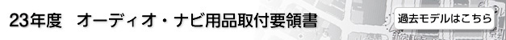

はじめに
使用手順、システム図、取り付け上の注意事項、作動確認を記載しております。
⇒ 「はじめに」を選択する
品目概要
オーディオ・テレビ及びナビゲーション類の各品番毎の構成部品、結線方法を記載しています。
⇒ 品目を選択する
車種別編
車種固有の取り付け要領及び配線要領を記載しています。
⇒ 車種を選択する
※一部車名表記を変更しました。(例：ポルテ/スペイド ⇒ ポルテ:ハ行、スペイド:サ行)
T-connectナビ及び法人ナビ、左記ナビと連携のある周辺品目に関しては、
「18年度 オーディオ・ナビ用品取付要領書」の記載となります。
書簡情報
最新の書簡3件を表示しています。
⇒ 書簡情報一覧
過去閲覧履歴
過去に表示した内容を5件表示します。